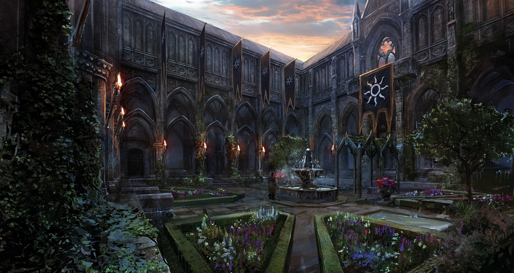
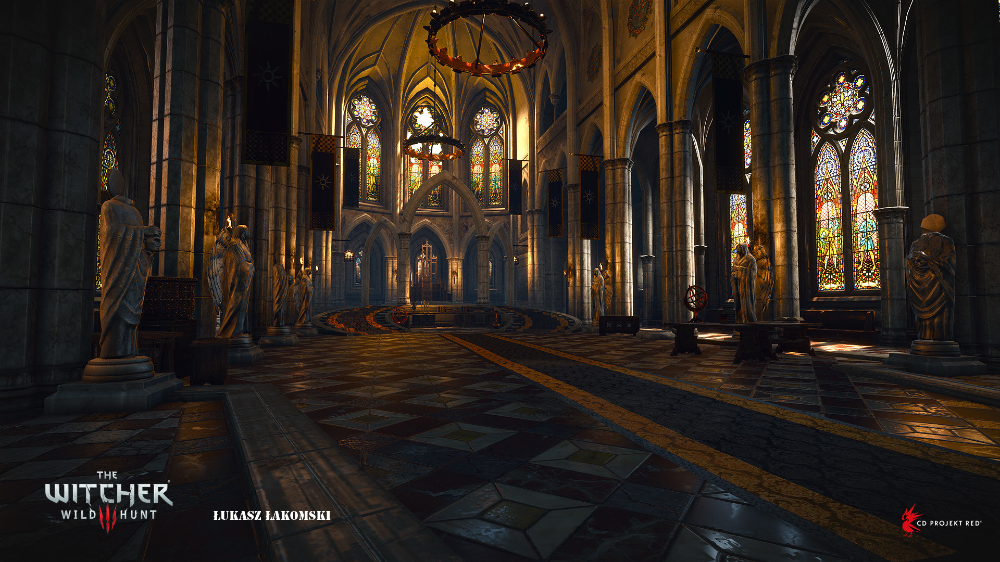

Wyzima byla původně hlavním městem království Temerie a sídlem krále Foltesta. Bývalo to pulzující, mocné severní velkoměsto postavené na břehu jezera Wyzima. V době, kdy se odehrává Zaklínač 3, je však situace drasticky odlišná. Temerie padla pod náporem nilfgaardské armády. Wyzima byla okupována a tamní královský palác byl přeměněn na přechodné sídlo nilfgaardského císaře Emhyra var Emreise. Zdejší atmosféra je plná napětí - honosné sály, kde kdysi hodovali severští šlechtici, jsou nyní chladným velitelským centrem dobyvatelů z Jihu. Hráč se do Wyzimy dostává okamžitě po dokončení prologu v Bělosadu. Geralta sem eskortuje Yennefer a tato návštěva funguje jako zásadní most mezi úvodem hry a otevřením celého obrovského světa. Na rozdíl od prvního dílu, kde byla k dispozici celá Wyzima, v Zaklínačovi 3 je tato lokace omezena pouze na královský palác a jeho přilehlé zahrady. Nemůžete tedy opustit brány paláce a jít do ulic města.
